6 Oeufs
L’écosystème marin pélagique abrite une très quantité d’organismes différents. Ces organismes, du moins d’un point de vue assez large, sont facilement distinguables de part leurs morphologies. Un grand nombre de ces organismes possèdent un stade sous forme d’œufs qui flottent dans le plancton. Néanmoins la diversité morphologique des individus adultes ne va pas de paire avec la diversité morphologique des œufs. Ces œufs sont d’apparence sphérique avec une zone centrale foncée, le vitellus, qui est la réserve énergétique (Quivy, Thomas 2018).
Dans cette classe les différents types d’œufs sont tout de même distingués le plus précisément possible à partir de différentes clés d’identification. Ils sont généralement discriminés les uns des autres par leur forme, taille, type de surface, présence ou absence d’une seconde membrane, le type et la couleur du vitellus et la position et la couleur du globule huileux (Rodriguez, Alemany, et Garcia 2017).
Les informations utilisées pour la caractérisation des œufs proviennent des guide Colton et Marak (1969), Konishi et al. (2008) et Rodriguez, Alemany, et Garcia (2017). Différencier les organismes associés aux œufs est impossible sur base des vignettes, c’est pour cela que l’identification se fera par rapport aux stades d’avancement de l’œuf.
6.1 Œufs de stade 1
Les œufs de stade 1 ne présentent pas de globule huileux ni d’embryons en formation. Le vitellus occupe en moyenne la moitié de l’espace.
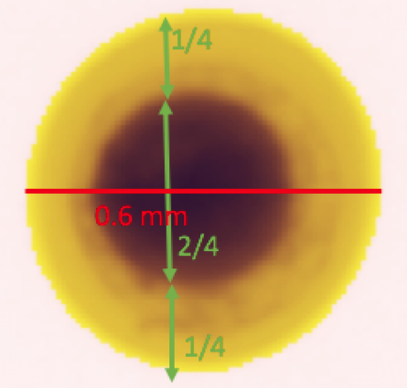
La Figure 6.2 propose des vignettes supplémentaires d’œufs de stade 1.
plot_vignettes(vigns, group = "eggs_stade_1")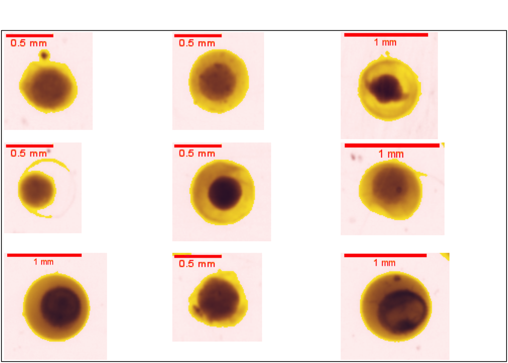
6.2 Œufs de stade 2
Les œufs de stade 2 sont caractérisés par un remaniement du vitellus avec un pôle animal la plupart du temps visible. Le vitellus est décentré et occupe plus d’espace (Figure 6.3).
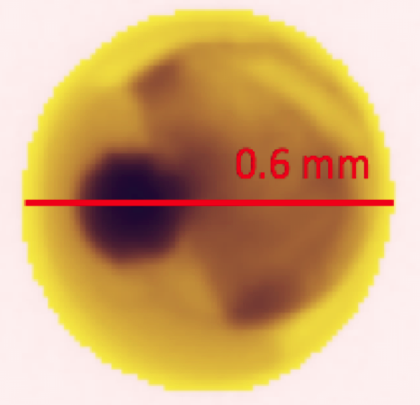
La Figure 6.4 propose des vignettes supplémentaires d’œufs de stade 2.
plot_vignettes(vigns, group = "eggs_stade_2")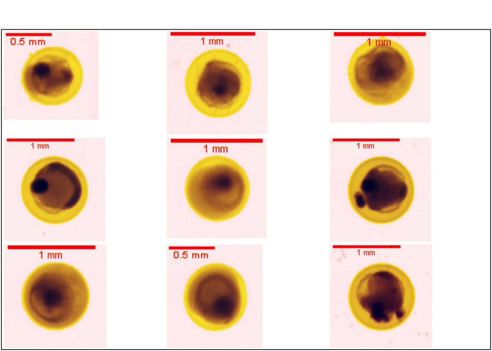
6.3 Œufs de stade 3
Les œufs de stade 3 sont des œufs d’un relativement grand diamètre, en moyenne 3 mm, avec un vitellus sphérique de couleur brun à noir. La petite tache noire à l’extrémité gauche du vitellus est le globule huileux. La surface plus foncée à gauche du vitellus est l’embryon en formation. Il est possible que cette surface soit le blastoderme mais cela est difficile à affirmer avec l’ensemble des vignettes (Figure 6.5) .
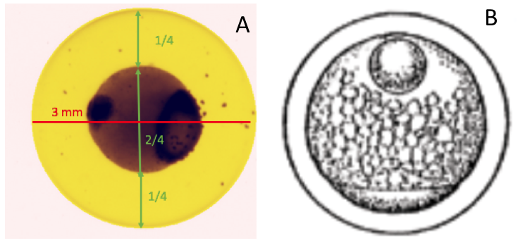
La Figure 6.6 propose des vignettes supplémentaires d’œufs de stade 3.
plot_vignettes(vigns, group = "eggs_stade_3")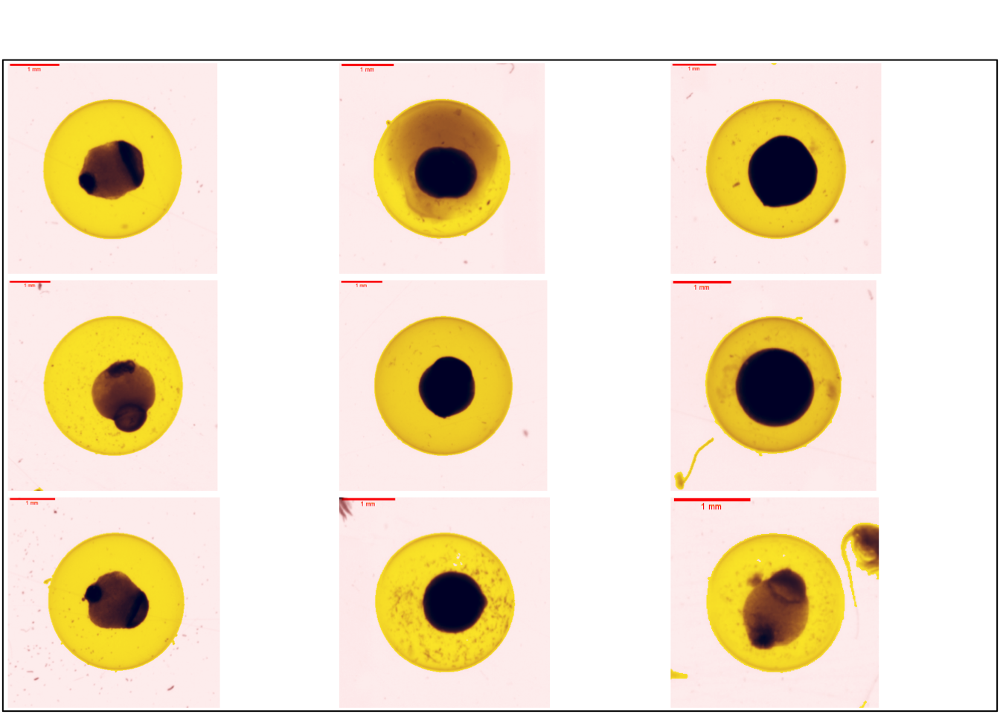
6.4 Œufs au stade 4
Les œufs de stade 4 sont des œufs assez similaires au stade 3 avec néanmoins un rapprochement entre la surface noire et le globule huileux (Figure 6.7).
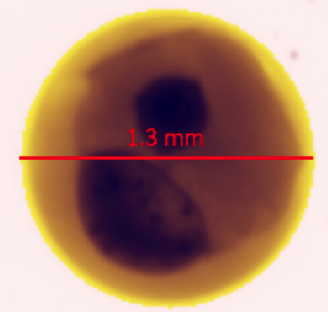
La Figure 6.8 propose des vignettes supplémentaires d’œufs de stade 4.
plot_vignettes(vigns, group = "eggs_stade_4")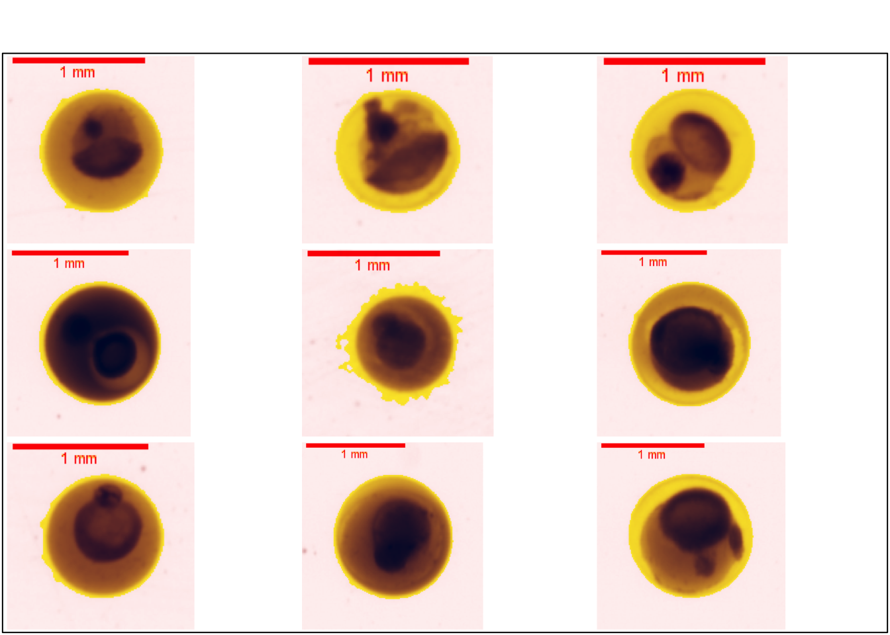
6.5 Œufs au stade 5
Les œufs de stade 5 sont caractérisés par la ligne brune transversale et épaisse qui traverse le vitellus. Cette ligne est probablement un embryon en formation. La tache noire visible est le globule huileux. En raison de la visibilité de l’embryon, ce stade est le dernier (Figure 6.9).
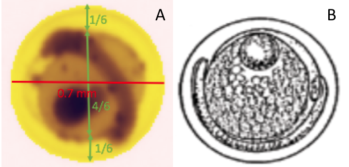
La Figure 6.10 propose des vignettes supplémentaires d’œufs de stade 5.
plot_vignettes(vigns, group = "eggs_stade_5")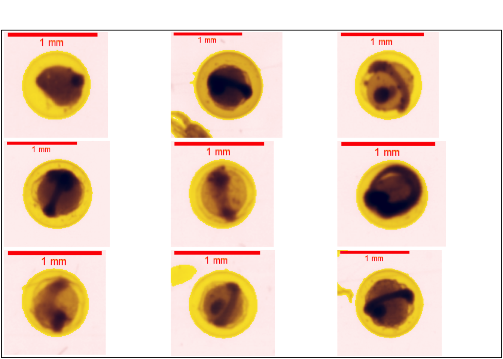
6.6 Œufs avec une nauplie
Un groupe d’œufs peut être individualisé. Il s’agit de ceux qui contiennent des nauplies en développement ( Figure 6.11).
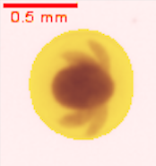
La Figure 6.12 propose des vignettes supplémentaires d’œufs contenant une nauplie.
plot_vignettes(vigns, group = "eggs_nauplius")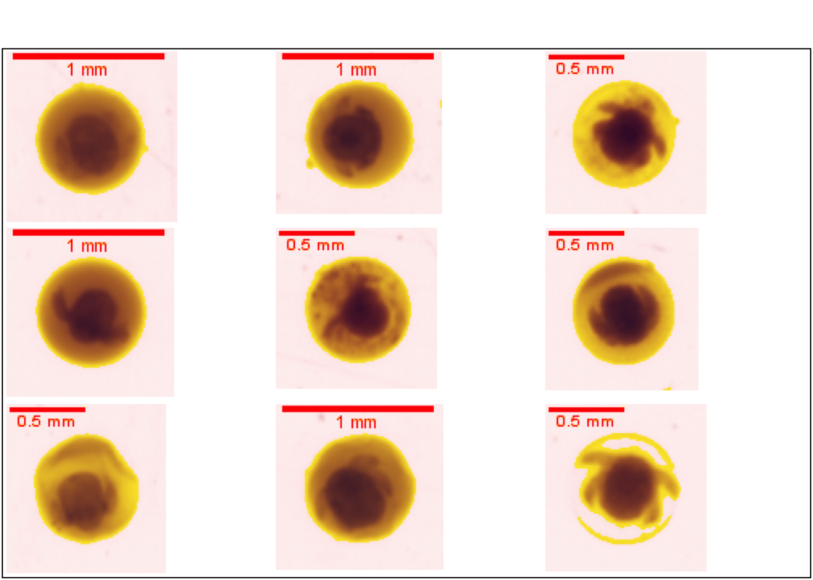